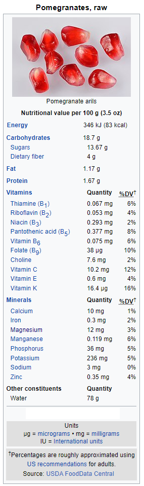

Wiki-Plant
Pomegranate
Antioxidant
Pomegranate
 Additional InfoCommon name: Pomegranate.
Scientific plant name: Punica granatum L.
Origin: The pomegranate is native to a region from modern-day Iran to northern India.
Harvest season: Harvesting takes place from September to November in mild temperatures to subtropical. They are fully ripened 3-4 years after being planted, and then they are clipped to reduce sharp points, then packed onto trays. They are sorted with care to reduce bruising and rinsed for quality. They’re stored for six weeks in the cold or up to 5 months in a controlled atmosphere.
Production: The largest producers are Canada, Thailand, and Poland, closely followed by Peru, Malaysia, and Chile. United States, Netherlands, and Serbia are minor producers as well.
Source:
https://www.tridge.com/intelligences/pomegranate/export
Health benefits: Pomegranate constituents, such as punicalagin, ellagic acid, and gallic acid, are believed to affect cardiovascular, neurological, digestive, bone, and men's health in general.
History of plant usage and discovery: Pomegranates have been cultivated throughout the Middle East, South Asia, and the Mediterranean region for several millennia, and it is also grown in the Central Valley of California and Arizona. Pomegranates may have been domesticated as early as the fifth millennium BC, as they were one of the first fruit trees to be domesticated in the eastern Mediterranean region.